설정 궁금한 점
안드로이드끼리는 입 밖으로 내지 않고 대화할 수 있는데 왜 굳이 소리내어 말로 할까. 상호 접속보다 간단한가?
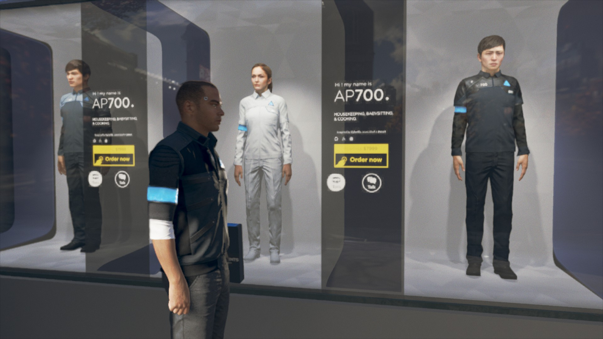
얼굴이 다 다른데 모델은 전부 AP700으로 뜬다.
혹시 외관은 폭넓게 선택가능하고 탑재되는 안드로이드 성능이 AP700 이런식인건가?
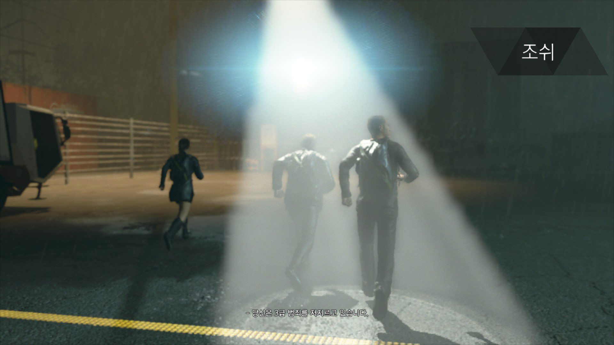
범죄 등급은 어떤 기준으로 어떻게 나뉘는 걸까?
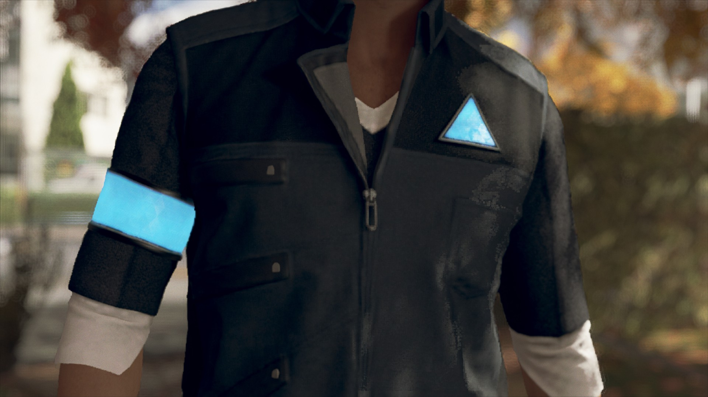
카라를 예로 들면 안드로이드 옷에 AX400과 이름이 번갈아 뜨고, 이름이 없는 안드로이드는 이름 대신 CYBERLIFE가 뜨는데 그런 게 아예 없는 케이스는 뭘까.
마커스는 특이케이스라 치고, 코너도 RK800만 뜨지 사이버라이프나 코너라고는 안 뜨는데🤔 그냥 옷 디자인 따라 다른건가?
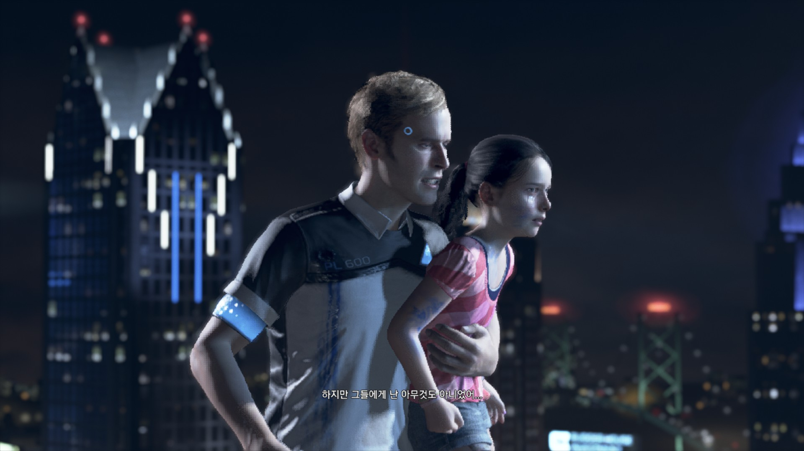
>> 생각해보면 저거 하나하나 이름을 어떻게 다 주겠나 싶기는 하다. 얘도 다니엘이란 이름 있는데 옷에 안 뜨는 거 보면 그냥 제작자들이 굳이 안 넣은 듯...
하지만 코너는 왜 이름 안 뜨게 했는지 여전히 궁금하네. 시제품이라 그런가?
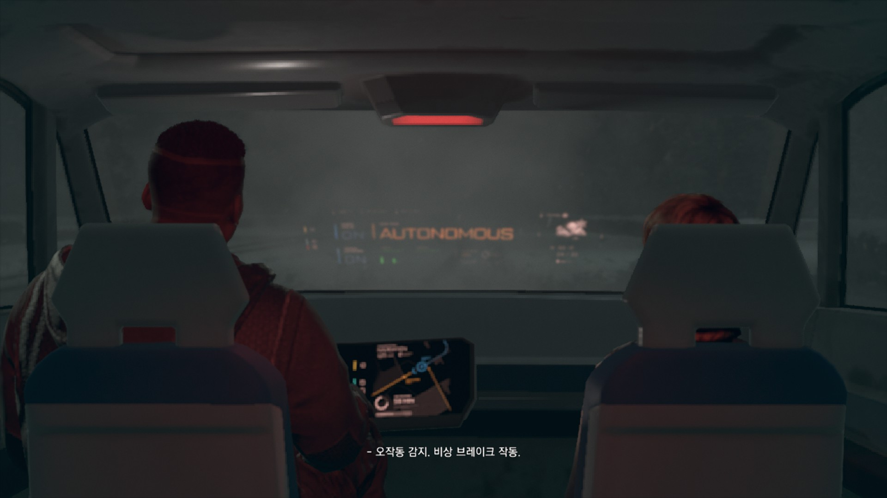
행크 정도를 제외하면 대부분 AI 자동차 시대인 거 같은데
운전면허 취득은 어떤 식으로 달라졌을까?
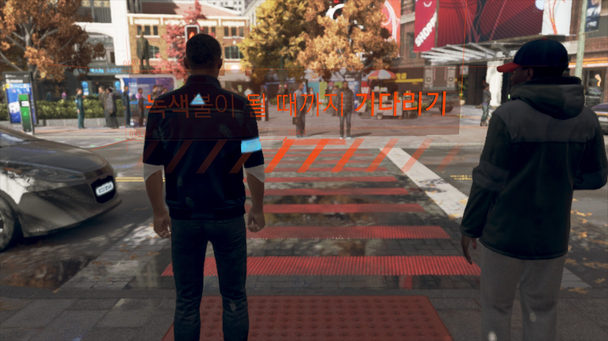
 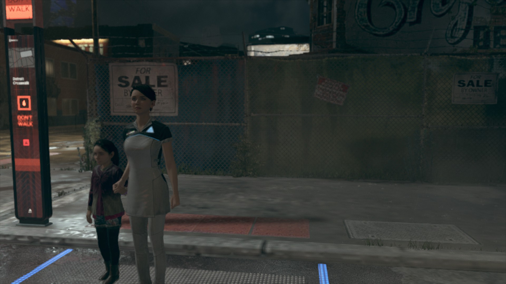
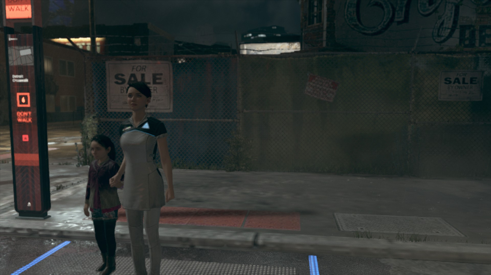
카라나 마커스가 불량품이 되기 전후로 무단횡단 가능여부가 다른데,
불량품 때는 무단횡단이 가능한 걸 보니 안드로이드 때는 '명령'이 되어있어 못 건너는 거 같다.
다만 자동차들이 무단횡단하는 불량품 마커스 앞에서도 멈추는 걸 보면
사람 여부를 따져서 멈추는 게 아니라 그냥 사물이 있는지를 판단하고 멈추는 걸지는 모르겠다.
아니 그런데 카라랑 앨리스는 고속도로에서 치이는 루트가 있는데 고속도로는 다른가? 음...
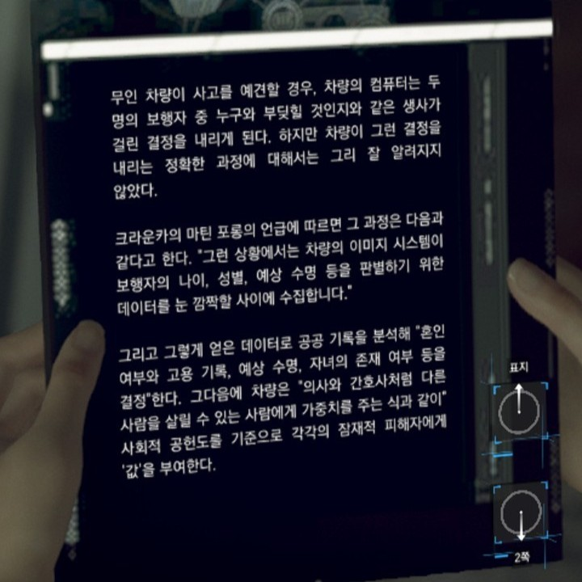 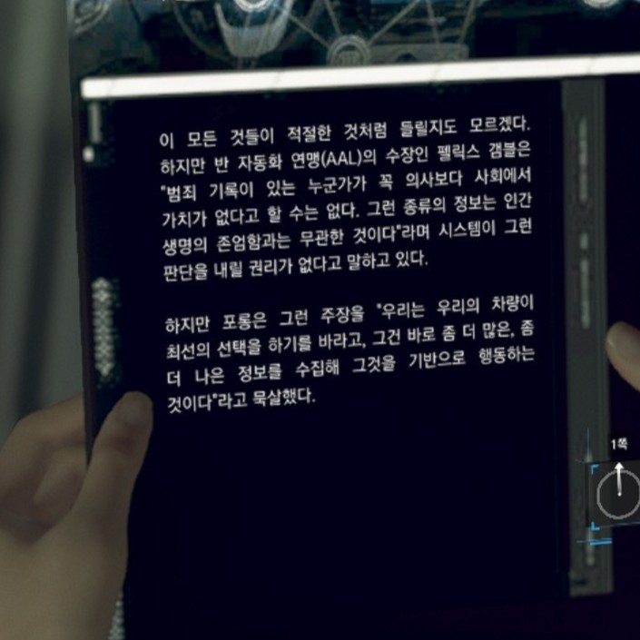
>>잡지에 이렇게 적힌 거 보면 인간/안드로이드 데이터 수집이 가능할 거 같긴 해서... 그냥 플레이어가 조작하는 캐릭터에는 자세한 설정을 안 넣었을지도
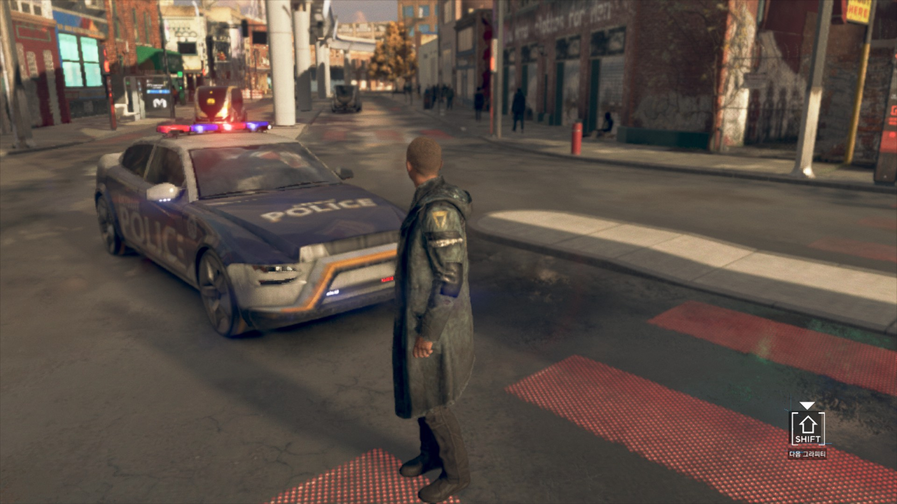
무려 경찰차도 멈춰 기다려주는 갓.커.스.
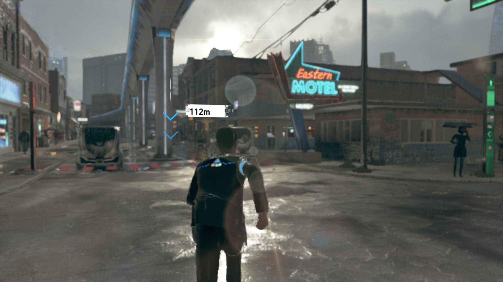
참고로 코너는 불량품이 아니어도 무단횡단이 가능한데, 아마 굉장히 자유로운 행동이 가능한 프로토 모델이라 그럴듯.
총도 챙기고 명령 거부도 가능하고 그런 걸 보면.
로봇 자동차가 대부분인 세상에서,
코너가 행크의 차를 몬다는 건 운전도 할 수 있다는 뜻인데,
코너나 마커스 정도만 운전을 할 수 있는 걸까 아니면 다른 안드로이드도 기본 탑재되어있는 기능일까?
토드는 카라 데려올 때 자기가 운전했어서, 탑재되어있는 모델이 뭐가 있는 걸지 궁금.
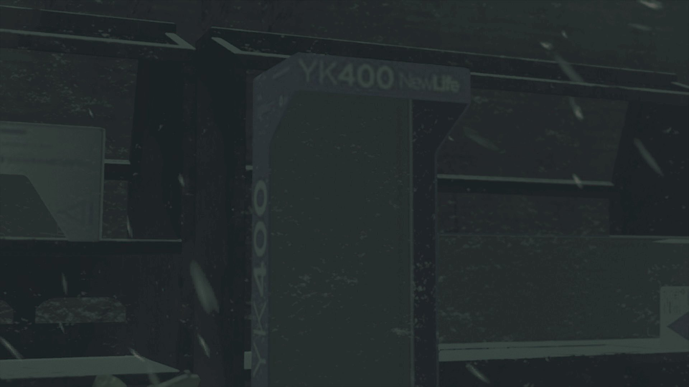
YK500 이전 시리즈는 어떤 모델이었을까? 맨 처음 제리코에 누워있던 어린아이는 무슨 모델이었을까?
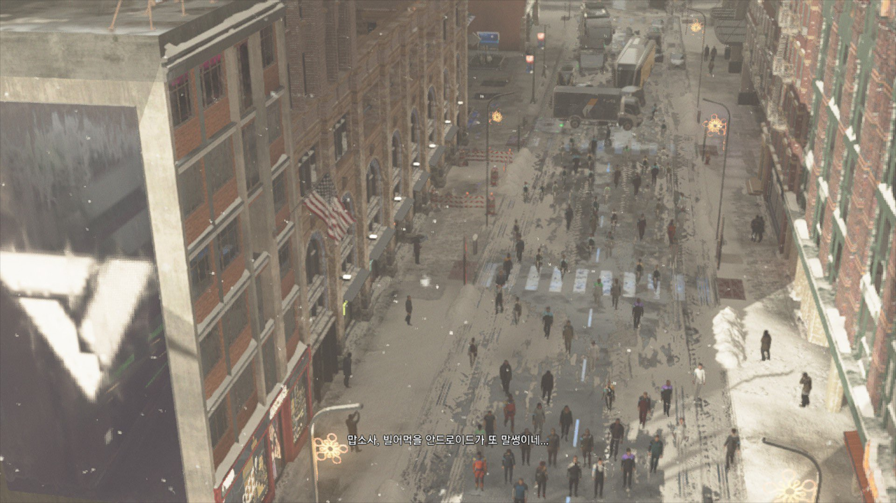 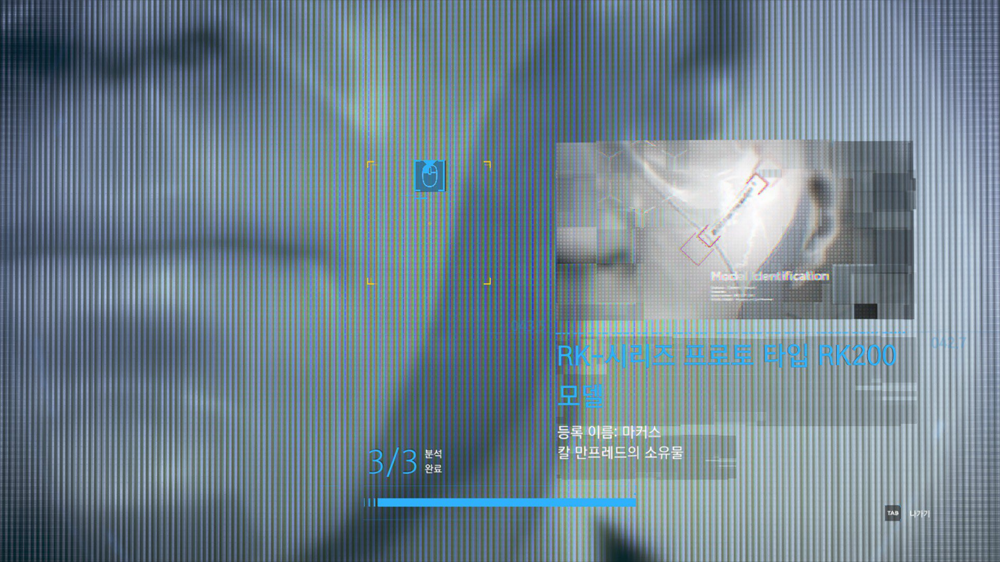
마커스가 안드로이드 전환할 때 원격으로도 하던데 코너는 못 하나..?
카라는 전환을 아예 안 하던데 프로토 타입인 RK 모델만 된다기엔 사이버라이프 타워에서 AP700끼리도 했고🤔
카라는 구형이라 그른가?
>> 이거 코너를 생각해봤을 때 프로토타입(시제품)은 학습형이니까
마커스는 전환을 많이 하면서 점점 익숙해지고, 그러면서 속도도 붙고 원격 전환도 가능해진 거 아닐까?
실제로 자유행진 때 QTE 속도가 점점 짧아지기도 했고.